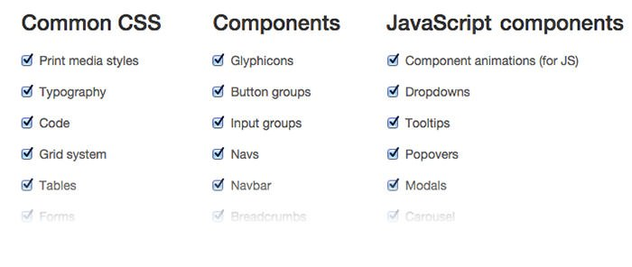
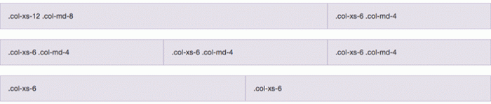
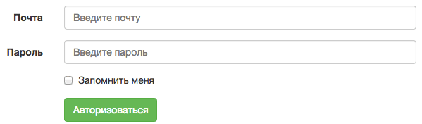
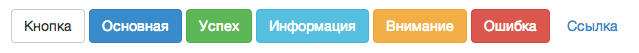
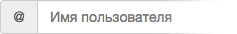
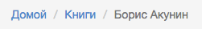
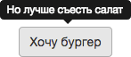
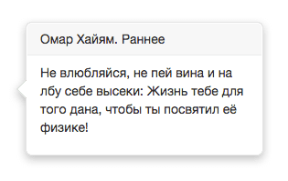

Уроки по Bootstrap. Урок №2: з чого складається і як його налаштувати
На цьому уроці я розповім, як вибирати компоненти для проекту і налаштовувати цей фреймворк під свої потреби, щоб прибрати зайве і не заплутатись.
Це початок практичної роботи над Bootstrap і основа будь-якого проекту на його основі. Знання цього уроку необхідні, але далеко не достатні, тому рекомендую почати з першого заняття і поступово вивчати інші, адже складність збільшується в міру накопичених вами знань. А пояснювати я намагаюся максимально простою мовою. Тобто так, щоб я зміг зрозуміти все з першого разу. Отжеююю
Навіщо налаштовувати Bootstrap?
Правильне питання. Адже ви можете завантажити готовий архів без налаштування й працювати з нім.
Причин дві: по-перше, швидше за все вам знадобляться не всі компоненти Bootstrap, а по-друге, вага такого шаблону навіть в стислому вигляді чималенький — 530 Кб. Додайте 90 Кб jQuery, без якого js-компоненти працювати відмовляться. Такої розкоші жоден фронт-енд розробник дозволити собі не може, тому будемо видаляти все зайве.
Вибір компонентів
На сторінці скачування бутстрапа ви побачите форму з чекбоксами. Тут вам потрібно відзначити ті, які стануть в нагоді в подальшій роботі над проектом.

Базові стилі Bootstrap (Common CSS)
Це набір основних елементів, які потрібні для базової верстки. Їх я б рекомендував завжди залишати зазначеними.
Стилі для друку (Print media styles)
Це стилі, які буде використовувати браузер при підготовці сторінки до друку. Налаштувати їх на свій розсуд ви можете в окремих стилях в такому форматі:
@media print {
/* ваші стилі */
}Стилі для текстів (Typography)
Базове оформлення тексту: відступи, абзаци, цитати, виділення коду, відформатованого тексту, заголовки, під-і надрядковий текст – все це буде оформлено цим набором стилів.
Навіть якщо ви не будете використовувати класи на сторінці, її вміст буде оформлено в bootstrap-стилі . Це зручно для тих випадків, коли ви не можете або не хочете копатися в старому коді. Досить підключити бібліотеку, щоб текст став більш читабельним.
Ось як зміниться звичайний текст без будь-яких додаткових стилів:

Оформлення коду (Code)
Оформлення коду на сторінках. Звичайно, тут немає підсвічування синтаксису, для цього доведеться користуватися окремим плагіном (ніяк, до речі, не пов’язаним з бутстрапа), але відрізнити код від звичайного тексту можна буде, уклавши його в тегах <code>, <pre> або <kdb>.
Блочна система (Grid system)
Магія будь-якого css-фреймворка досі призводить до розчулення старців, які верстали років 10 назад і перед початком верстки думали, верстати таблицями або блоками. Простим додаванням потрібних класів ви отримуєте адаптивну (responsive) верстку для вашого сайту за 10 хвилин.
Зараз же покажу вам приклад того, яким це може бути на вигляд:

Таблиці (Tables)
Таблична верстка давно залишилася в минулому, але табличні дані повинні відображатися відповідно, якщо не зазначено інше. Без належного оформлення таблиці виглядають вкрай непривабливо.
Намагайтеся уникати такого:

Після простого додавання Bootstrap без змін в html таблиця стане такою:

Форми (Forms)
Якщо вам потрібно оформляти форми, Bootstrap вміє і це:

Відмічайте цей елемент, якщо вам доведеться оформляти форми.
Кнопки (Buttons)
Кнопки в Bootstrap — це тема для окремої розмови: за замовчуванням є 4 розміру і 7 видів кнопок. Крім того, є кнопки з випадним меню, блоки з кнопок тощо. Повторюючи матеріал першого уроку, нагадаю, що кнопки за замовчуванням такі:

Чуйні елементи (Responsive utilities)
У Bootstrap є набір зручних інструментів для швидкої і зручної верстки під мобільні пристрої. Завдяки їм можна ховати і відображати ті чи інші компоненти на різних пристроях і міняти їх розміри окремо для великих, дрібних і середніх розмірів екрану.
«Чуйні компоненти» дозволять істотно заощадити код і складаються з таких компонентів (для версії Bootstrap 3):
| Дуже дрібні екрани Телефони (до 768 px) |
Маленькі екрани Планшети (≥768px) |
Середні екрани Настольні (≥992px) |
Великі екрани Настольні (≥1200px) |
|
|---|---|---|---|---|
.visible-xs-* |
Видимий | Прихований | Скрытый | Прихований |
.visible-sm-* |
Прихований | Видимий | Прихований | Прихований |
.visible-md-* |
Прихований | Прихований | Видимий | Прихований |
.visible-lg-* |
Прихований | Прихований | Прихований | Видимий |
.hidden-xs |
Прихований | Видимий | Видимий | Видимий |
.hidden-sm |
Видимий | Прихований | Видимий | Видимий |
.hidden-md |
Видимий | Видимий | Прихований | Видимий |
.hidden-lg |
Видимий | Видимий | Видимий | Прихований |
Як бачите, один і той же блок можна заховати на планшеті і показувати тільки на робочому столі і мобільному.
Компоненти (Components)
Тут розповім коротко, так як ці компоненти невеликі і з назви легко зрозуміти їх призначення.
- Glyphicons: іконочний шрифт. Важить близько 250 кб і використовується нечасто. Тому якщо не потрібен — відключайте.
- Button groups: блоки, які об’єднують кілька кнопок.
- Input groups: розширення для текстових блоків і полів, наприклад, так:
 - Navs, таби, вкладки: навигація з табами, вимагає підключення js-модуля.
- Navbar: навігація головного меню; може бути закріпленим, світлим або темним.
- Breadcrumbs: хлібні крихти
 - Pagination: посторінкова навігація; особливо корисна для блогів.
- Pager: кнопки “вперед” і “назад”.
- Labels: 6 видов “наклейок”:

- Badges: виноски. Наприклад, для позначення непрочитаних листів.
- Jumbotron: великий блок з текстовим привітанням. Зазвичай використовується на промо-сайтах для короткого опису проекту.
- Thumbnails: оформлення зменшених копій фотографій.
- Alerts: повідомлення (успіх, помилка, інформація, підказка).
- Progress bars: прогрес, вказується в процентах, можна додати анімацію й смугастий фон.
- Media items: оформлення блоків з коментарями, твітами тощо. Це зазвичай списки з елементами вкладеності, яка відрізняється відступом з лівого краю. Як у звичайних деревовидних коментарів.
- List groups: оформлення списків з додатковими можливостями: виноски, список з посилань, повідомлення (дивіться “labels”)
- Panels: блоки з заголовком, основним контентом і футером. Можуть використовуватися як для розширених повідомлень, так і для елементів управління або форм.
- Responsive embed: “чуйні” об’єкти вміють розтягуватися на різних розмірах екрану, щоб відображати відео в правильному співвідношенні сторін і без явного вказівки розмірів.
<!-- відео зі співвідношенням сторін 16:9 --> <div class="embed-responsive embed-responsive-16by9"> <iframe class="embed-responsive-item" src="…"></iframe> </div> <!-- відео зі співвідношенням сторін 4:3 --> <div class="embed-responsive embed-responsive-4by3"> <iframe class="embed-responsive-item" src="…"></iframe> </div>
- Wells: вставки з підказками, альтернативне оформлення цитат і так далі.
- Close icon: думаю, тут все ясно.
JavaScript компоненти
Bootstrap розширює функціонал динамічними функціями. Ця частина фреймворка працює на основі jQuery і вимагає, щоб він був підключений до bootstrap.min.js. Складається з таких компонентів:
- Component animations (for JS): плавні переходи, анімація.
- Collapse: згортання блоків, спойлери
- Dropdowns: випадають списки.
- Tooltips: невеликі підказки.
 - Popovers: спливаючі підказки, в яких можна додавати динамічний контент, заголовок і основний текст:
 - Modals: спливні вікна. Можна міняти розміри, додавати заголовок, основний текст і футер. І модифікувати як завгодно. На вигляд за замовчуванням таке:

- Carousel: простий слайдер з декількома варіантами руху.
- Tabs.js,створення вкладок і табів
Налаштування змінних
Ви можете модифікувати стандартні параметри як завгодно. Можна створити свою тему Bootstrap двома способами:
- створити свій style.css і в ньому вказувати стилі, які “перекриють” стандартні;
- в блоці Less Variables поміняти параметри на потрібні і завантажити архів з бутстрапа, налаштованим тільки для вас.
Де скачати
Після закінчення настройки в самому низу тиснемо “Compile and download”, в отриманому архіві будуть тільки вибрані вами елементи. Я порівняв, що якщо невеликий проект використовує тільки частину всього функціоналу, то вага фреймворка легко зменшити з 600 до 100 Кб. Отримані файли зберігаємо в папку з проектом, підключаємо bootstrap.min.css і (якщо потрібно) bootstrap.min.js.